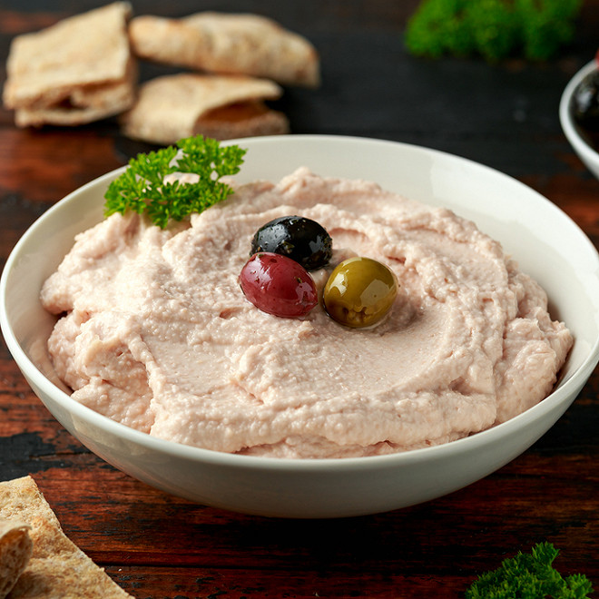

Tarama

Description
Avec cette recette de tarama, réalisez vous-même votre tarama pour l'apéritif !
Facile et rapide à réaliser, laissez-vous emporter par son onctuosité et sa fraîcheur !
Vous pourrez agrémenter votre tarama de ciboulette ciselée, d'aneth, ou encore d'oeufs de
truite pour apporter un petit plus à votre recette !
Ingredients
- Oeuf(s) de cabillaud 200 g
- Mie de pain 70 g
- Jaune(s) d'œuf(s) 0,5
- Jus de citron Un peu
- Huile 170 g
- Lait 0,5 verre(s)
Steps
- Mettez le pain de mie sans croûte dans un bol et versez assez de lait pour l'imbiber complètement.
- Essorez la mie dans la main, enlevez le lait contenu dans le bol et remettez la mie écrasée dedans.
- Ajoutez un demi jaune d'oeuf (le jaune de servira pour l'émulsion de l'huile).
- Mélangez à basse vitesse au fouet électrique pendant 2 minutes.
- Ajoutez deux ou trois cuillerées d'huile tout en continuant de battre à moyenne vitesse afin d'émulsionner l'huile.
- Retirez la peau qui entoure les oeufs de cabillaud, et ajoutez-les au reste. Mélangez jusqu'à ce que ce soit bien homogène.
- Puis avec un fouet électrique, ajoutez l'huile en filet petit à petit comme pour une mayonnaise !
- Une fois toute l'huile ajoutée, mélangez à la cuillère en raclant les bords.
- Filmez le tarama avec un film alimentaire au contact (le film alimentaire doit toucher la surface du tarama pour ne pas qu'une croûte ne se forme à la surface). Laissez reposer votre tarama au frais au moins 2 heures au réfrigérateur.
- Sortez votre tarama du réfrigérateur, et ajoutez-y un peu de jus de citron (selon votre convenance), mélangez, puis servez le tarama avec des petits blinis tiédis (vous pouvez également les faire maison!).